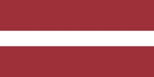

Click in the menu to obtain major info about country
Estonia
Capital: Tallinn
Population: 1,329,460
Description:
Estonia, officially the Republic of Estonia (Estonian: Eesti Vabariik), is a country on the eastern coast of the Baltic Sea in Northern Europe. It is bordered to the north by the Gulf of Finland across from Finland, to the west by the Baltic Sea across from Sweden, to the south by Latvia, and to the east by Lake Peipus and Russia.
City
Population
Tallinn
394,024
Tartu
101,092
Narva
66,980
Pärnu
44,192
France
Capital: Paris
Population: 67,406,000
Description:
France, officially the French Republic (French: République française), is a country primarily located in Western Europe, consisting of metropolitan France and several overseas regions and territories. The metropolitan area of France extends from the Rhine to the Atlantic Ocean and from the Mediterranean Sea to the English Channel and the North Sea.
City
Population
Paris
2,190,327
Marseille
862,211
Lyon
515,695
Toulouse
475,438
Germany
Capital: Berlin
Population: 83,166,711
Description:
Germany, officially the Federal Republic of Germany (German: Bundesrepublik Deutschland), is a country in Central Europe. It is the second-most populous country in Europe after Russia, and the most populous member state of the European Union. Germany is situated between the Baltic and North seas to the north, and the Alps to the south.
City
Population
Berlin
3,275,000
Hamburg
1,686,100
München
1,185,400
Köln
965,300
Greece
Capital: Athens
Population: 10,718,565
Description:
Greece, officially the Hellenic Republic, is a country located in Southeast Europe. Its population is approximately 10.7 million as of 2018; Athens is its largest and capital city, followed by Thessaloniki. Situated on the southern tip of the Balkans, Greece is located at the crossroads of Europe, Asia, and Africa. It shares land borders with Albania to the northwest, North Macedonia and Bulgaria to the north, and Turkey to the northeast.
City
Population
Athens
3,090,508
Thessaloniki
824,676
Patras
167,446
Larissa
144,651
Italy
Capital: Rome
Population: 60,317,116
Description:
Italy, officially the Italian Republic (Italian: Repubblica Italiana), is a country consisting of a continental part, delimited by the Alps, a peninsula and several islands surrounding it. Italy is located in Southern Europe, and is also considered part of Western Europe.
City
Population
Rome
4,342,212
Milan
3,250,315
Naples
3,084,890
Turin
2,259,523
Latvia

Capital: Riga
Population: 2,070,371
Description:
Latvia, officially known as the Republic of Latvia (Latvian: Latvijas Republika), is a country in the Baltic region of Northern Europe. Since Latvia's independence in 1918, it has been referred to as one of the Baltic states. It is bordered by Estonia to the north, Lithuania to the south, Russia to the east, Belarus to the southeast, and shares a maritime border with Sweden to the west.
City
Population
Riga
627,487
Daugavpils
82,046
Liepāja
68,535
Jelgava
56,062
Lithuania
Capital: Vilnius
Population: 2,070,371
Description:
Lithuania, is a country in the Baltic region of Europe. Lithuania is one of the Baltic states. Situated on the eastern shore of the Baltic Sea, to the southeast of Sweden and to the east of Denmark, Lithuania is bordered by Latvia to the north, Belarus to the east and south, Poland to the south, and Kaliningrad Oblast (a Russian exclave) to the southwest.
City
Population
Vilnius
589,425
Kaunas
293,257
Klaipėda
149,046
Šiauliai
101,862
Poland
Capital: Warsaw
Population: 38,268,000
Description:
Poland, officially the Republic of Poland (Polish: Rzeczpospolita Polska), is a country located in Central Europe. Poland's topographically diverse territory extends from the beaches along the Baltic Sea in the north to the Sudetes and Carpathian Mountains in its south. The country is bordered by Lithuania and Kaliningrad Oblast of Russia to the northeast, Belarus and Ukraine to the east, Slovakia and the Czech Republic to the south, and Germany to the west.
City
Population
Warsaw
1,793,579
Kraków
780,981
Łódź
677,286
Wrocław
643,782
Spain
Capital: Madrid
Population: 47,450,795
Description:
Spain, formally the Kingdom of Spain (Spanish: Reino de España), is a country in Southwestern Europe with some pockets of territory across the Strait of Gibraltar and the Atlantic Ocean. Its continental European territory is situated on the Iberian Peninsula. Its territory also includes two archipelagos: the Canary Islands off the coast of North Africa, and the Balearic Islands in the Mediterranean Sea.
City
Population
Madrid
3,266,126
Barcelona
1,608,746
Valencia
794,288
Seville
688,592
Sweden
Capital: Stockholm
Population: 47,450,795
Description:
Sweden, officially the Kingdom of Sweden (Swedish: Konungariket Sverige), is a Nordic country in Northern Europe. It borders Norway to the west and north, Finland to the east, and is connected to Denmark in the southwest by a bridge-tunnel across the Öresund Strait. Sweden is the largest country in Northern Europe, the third-largest country in the European Union, and the fifth largest country in Europe.